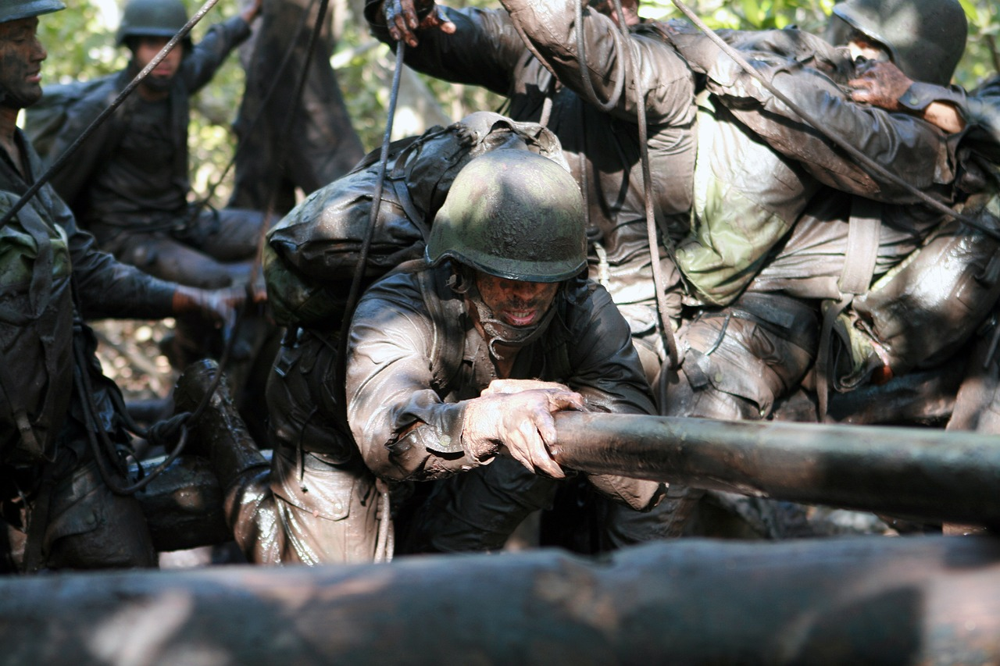
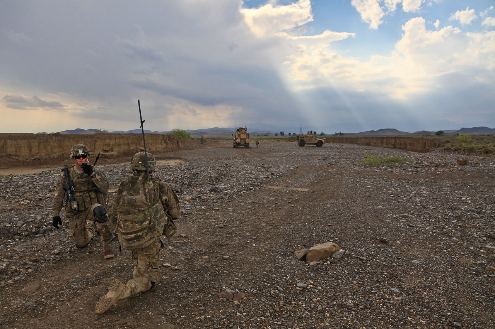

My Journey in the United States Army
My time in the United States Army is filled with experiences that have shaped who I am today. Here are the highlights of my journey:
-
Enlistment and training:
I joined the Army in 2008. My military adventure began with basic training in Kentucky, followed by Advanced Individualized Training at Aberdeen Proving Ground in Maryland. It was here that I specialized as a wheeled vehiclemechanic.
-
Specialization:
Further honing my skills, I trained as a Stryker Systems Maintainer and a Stryker Recovery System Operator. These roles equipped me with the expertise needed to maintain and operate one of the Army's most versatile combat vehicles.
-
Stationing and Deployments:
After completing my training, I was stationed at Schofield Barracks in Hawaii. My time there included deployments to Iraq in support of Operation Iraqi Freedom II and Operation New Dawn, contributing to our nation's efforts in the region.
-
Promotion and Leadership:
I achieved the rank of sergeant while stationed in Hawaii, a testament to my growth as a leader and a professional in the Army.
-
Further Service:
I transferred to Joint Base Lewis McCord, where I served as the operations NCOIC until the end of my career in 2015.
Serving in the United States Army from 2008 to 2015 was an honor that taught me the values of discipline, teamwork, and perseverance. Through basic training, specialized roles, deployments, and leadership positions, I've gathered a collection of memories and lessons that I will forever cherish.